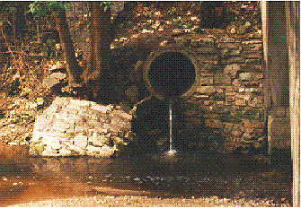
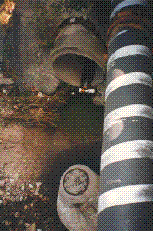
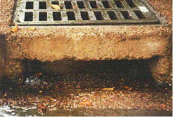
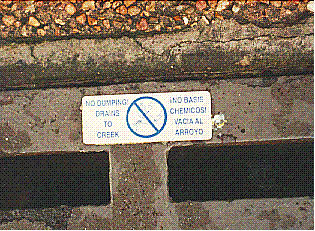
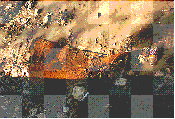
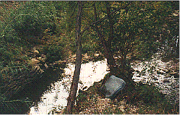
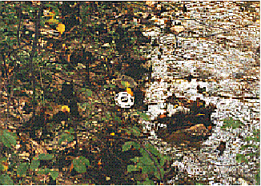

Evidence of Degraded Water Quality

Water from a storm drain entering Waller Creek. Austin's street
and storm drain system uses natural channels for all urban runoff.

In this section of Waller Creek on the University of Texas campus,
a utility pipe crosses over a manhole cover leading into Austin's sanitary
sewer system. Many of the city's sanitary sewer line have been buried beneath
the natural stream channels. Since most of Austin sits atop rock formations
that are expensive to excavate, using the stream channels to bury the sanitary
sewer mains was economically expedient.

A storm drain leading directly into Waller Creek. Many residents
are unaware that materials dumped into these drains flow directly into
the city's rivers and streams.

In recent years, the City has painted signs on street drains to
warn people about dumping waste. One of the greatest problems is that backyard-mechanics
dump old motor oil as well as transmission and brake fluid into these drains
to avoid a trip to a disposal facility. These oils and toxic fluids flow
directly into city rivers and streams.

Some examples of the debris and litter that are dumped into streams
by intention and accident.

Some very substantial pieces of debris end up in stream channels.
Here a mattress has become lodged against a tree along Waller Creek in
central Austin.

Litter that has been carried into Waller Creek by runoff. Some
debris is also added by the substantial number of homeless people who live
along the banks of Waller and Shoal creeks in central Austin.
Created by Katrin Molch, October 1995. Last revised 21 January 1998.
RRR.